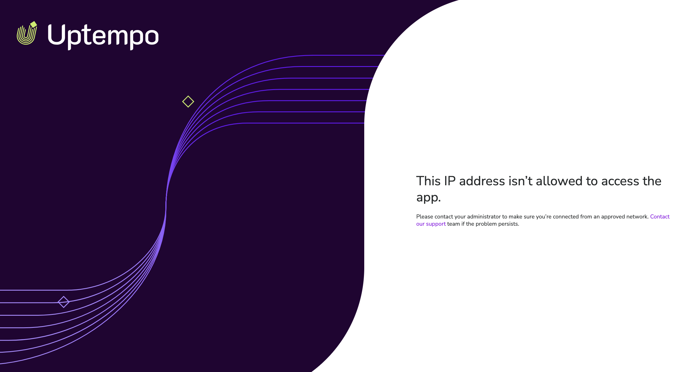
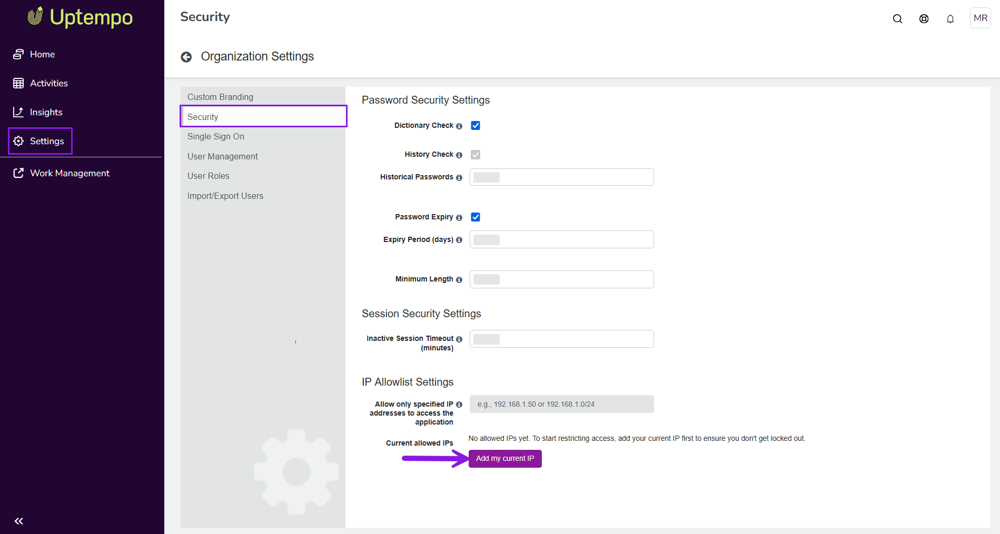
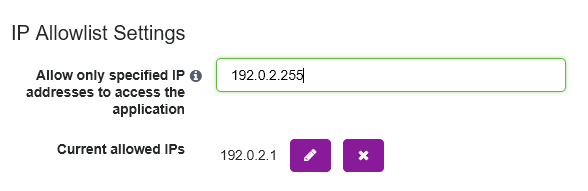

By default, an Uptempo instance is not IP address-restricted: any user with valid credentials to the instance can successfully sign in from any network.
If your organization requires additional security, you can configure an IP allowlist to specify which IP addresses are allowed to connect to your Uptempo instance. For example, you can require that users can only sign in to your Uptempo instance if they are on an office network, or are connected to your VPN.
When you configure an IP allowlist, Uptempo will only accept login attempts made from IP addresses that are on the allowlist. This additional layer of security helps to prevent unauthorized access in the event of a password leak, as login attempts from unrecognized IP addresses are automatically blocked — even if the credentials are still valid.
How the IP allowlist works
To configure the IP allowlist, you add approved IP addresses to the list. The allowlist is automatically activated after at least one IP address has been added.
When the allowlist is active, the authentication system checks every login attempt against the allowlist. If the attempt is using valid login credentials, and is coming from an IP address that is:
On the allowlist: The login is approved as usual.
Not on the allowlist: The login is rejected, and an error is displayed: 
Supported authentication methods
IP allowlist functionality is supported for the following authentication methods:
Web authentication (email address and password)
SAML single sign-on (SSO) authentication
Configure and manage the IP allowlist
Before you begin
This functionality is available in Uptempo 2.0 instances with the Optimize package.
To configure this functionality, you must have administrator access to your Uptempo instance.
Before you start configuring the IP allowlist, obtain and confirm the following IP addresses:
Your own IP address
All other IP addresses that must be added to the allowlist (such as your organization's office/VPN IP addresses)
Activate and add IP addresses to the allowlist
By default, the allowlist does not contain any IP addresses, and is deactivated.
To activate the allowlist, you first add your own IP address, then add any other IP addresses (or address ranges) that you want to allow.
Activate the IP allowlist
To activate the allowlist, you must first add your current IP address to the allowlist. This ensures that you do not lock yourself out of Uptempo, as the allowlist begins restricting access immediately after activation.
In Uptempo, click Settings in the navigation menu. The Organization Settings page opens.
In the Organization Settings menu, click Security. The Password Security Settings page opens.
In the IP Allowlist Settings section, click Add my current IP: 
In the confirmation dialog, check that the displayed IP address matches the IP you are currently using and is the IP that you usually use to access Uptempo. If it does, click Add to proceed (otherwise, click Reset to cancel).
Your IP address is added to the allowlist, and is displayed under IP Allowlist Settings > Current allowed IPs.
The IP allowlist is now active. The system will now only approve logins IP addresses on the allowlist with immediate effect.
If there are additional IP addresses that your organization uses to access Uptempo, you should add them now to ensure that authorized users do not lose access.
Add IP addresses to the allowlist
You can add IP addresses to the allowlist at any time.
In Uptempo, click Settings > Security to open the Password Security Settings page.
In the IP Allowlist Settings section, enter the IP address (or range) you want to add into the field beside Allow only specified IP addresses to access the application. You can specify IP addresses as:
Individual IPv4 addresses in the format x.x.x.x (for example, 205.90.82.191)
Individual IPv6 addresses in the format y:y:y:y (for example, 13d5:e893:cca7:aaf7:3cc8:3ca8:d88c:c62a)
CIDR IPv4 address ranges in the format x.x.x.x/x (for example, 205.90.82.191/24) 
Click outside the field to add the IP address. In the confirmation dialog, click Add to confirm that you want to add the IP address to the allowlist.
The IP address is added to the allowlist, and is displayed under IP Allowlist Settings > Current allowed IPs.
Optional: Repeat steps 2-4 to add further IP addresses to the allowlist.
Your changes take effect immediately, and users connecting from a newly added IP address can sign in to your Uptempo instance right away.
Edit and remove IP addresses from the allowlist
If there are changes to your organization's network, you can adjust the IP allowlist at any time. You can modify any existing IP address on the allowlist, and remove IP addresses that are no longer used.
Edit an IP address on the allowlist
In Uptempo, click Settings > Security to open the Password Security Settings page.
In the IP Allowlist Settings section, find the IP address you want to edit in the list under Current allowed IPs.
Click Edit beside the IP address.
Edit the IP address as needed, then click Save to save your changes.
The IP address displayed under IP Allowlist Settings > Current allowed IPs updates to reflect the change.
Your change takes effect immediately.
Delete an IP address from the allowlist
In Uptempo, click Settings > Security to open the Password Security Settings page.
In the IP Allowlist Settings section, find the IP address you want to delete in the list under Current allowed IPs.
Click Delete beside the IP address. In the confirmation dialog, click Delete to confirm that you want to delete the IP address from the allowlist.
The IP address is removed from the allowlist, and is no longer displayed under IP Allowlist Settings > Current allowed IPs.
Your change takes effect immediately, and login attempts from the removed IP address will no longer be allowed.
{kind=link}
 Settings in the navigation menu. The Organization Settings page opens.
Settings in the navigation menu. The Organization Settings page opens.{kind=link}
 Delete beside the IP address. In the confirmation dialog, click Delete to confirm that you want to delete the IP address from the allowlist.
Delete beside the IP address. In the confirmation dialog, click Delete to confirm that you want to delete the IP address from the allowlist.